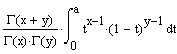

ibeta(a, x, y) Returns the value of the incomplete beta
function of x and y with
parameter a.

Arguments:
- a is a real scalar between 0 and 1, inclusive.
- x, y are real positive scalars.
Notes:
- For any valid x and y,
ibeta(1,x,y) = 1, that is, the function becomes complete
at a = 1. The definition is related to the Γ
function.
- The incomplete beta function arises often in probabilistic applications.
For example, the cumulative probability density for the Student's
t and binomial distributions
can be computed in terms of ibeta.